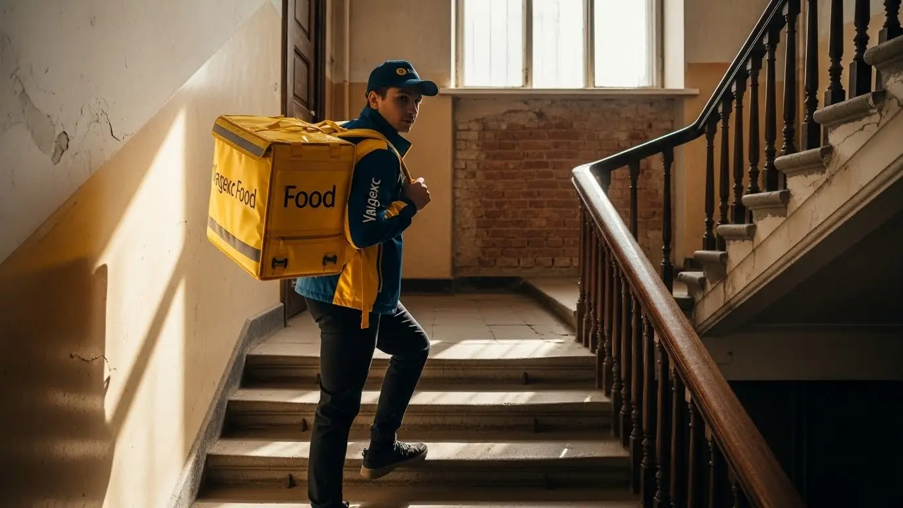
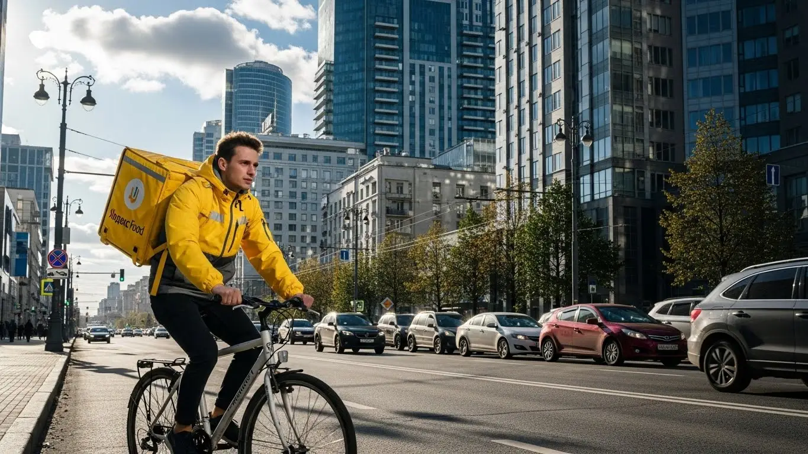

Доход курьера Яндекс Еда в Королёве 2025-2026: разбор условий

- Работа курьером Яндекс Еды в Королёве: для кого эта вакансия и что вы получите
- Сколько вы будете зарабатывать курьером в Королёве: калькулятор дохода и разбор выплат
- Реальный заработок курьера в Королёве: смены и месячный доход
- График работы и форматы занятости
- Требования к кандидату и документы
- Самозанятость, налоги и юридическая чистота
- Пошаговое оформление и первый выход на линию в Королёве
- Пешком, на вело или на авто: что выгоднее в Королёве
- Районы, маршруты и «топовые» зоны заказов в Королёве
- Безопасность, страховка, штрафы и оплата простоя
- Плюсы и возможные минусы работы курьером в Королёве
- Реальные истории и отзывы курьеров из Королёва
- Ответы на главные вопросы о работе курьером Яндекс Еды в Королёве
- Короткие ответы на главные вопросы
- Итоги и ваш следующий шаг
Все города
Здорово, будущий коллега! Думаешь, работа курьером в Королёве — это просто сел на велик и поехал зарабатывать? А как насчёт пробок на проспекте Королёва, убитой подвески после заказов в частный сектор и вечного поиска парковки у новостроек? Если ты ищешь правду о том, сколько реально остаётся в кармане после всех расходов и нервов, то ты по адресу. Это не очередная рекламная статья, где обещают золотые горы. Это реальный разбор полётов по работе в Яндекс Еде, Доставке и Лавке именно в нашем городе.
Поверь, 9 из 10 новичков сливаются в первый же месяц, потому что видят только яркую кнопку «Начать» в приложении, но не считают реальные расходы: на бензин или ремонт вела, налоги для самозанятых, и не понимают, как работает приоритет. Они не знают, почему в Юбилейном заказов валом, а в старых Подлипках можно просидеть час впустую, ожидая заказ из единственной пиццерии. В итоге — разочарование и миф о том, что «тут не заработать». А заработать можно, если знать как. Если хочешь сразу увидеть актуальные условия, детальный калькулятор дохода и подать заявку, вся информация про работу курьером Яндекс Еда в Королёве собрана на официальной странице для партнёров.
Здесь мы всё разложим по полкам. Мы честно посчитаем, сколько чистыми остаётся в кармане у пешего, вело- и автокурьера в Королёве. Разберём, в каких районах и в какое время самые «жирные» заказы и почему погода — твой лучший друг для заработка. Я покажу на примерах, за что реально штрафуют и как этого избежать. Сравним, что выгоднее — Еда или Лавка, и стоит ли вообще смотреть в сторону конкурентов в нашем городе.
Меня зовут Алексей. Я сам откатал не одну тысячу километров по Королёву с жёлтым рюкзаком, а сейчас у меня свой небольшой таксопарк-партнёр. Так что я знаю эту кухню от и до — и со стороны курьера, и со стороны «Яндекса». Никакой рекламы, только факты, цифры и советы, которые сэкономят тебе кучу нервов и денег. Готов? Тогда давай по порядку, сейчас всё разложу.
Чтобы тебе было проще сориентироваться, дальше будет короткий гид по ключевым темам статьи.
Что ты точно узнаешь из этого разбора
В этой статье ты ТОЧНО узнаешь:
- Сколько на самом деле остаётся в кармане у курьера в Королёве за день работы пешком, на вело и на авто?
- Где в Королёве ловить «жирные» заказы с повышенными коэффициентами и почему дождь — твой лучший друг?
- За какие косяки Яндекс реально снижает рейтинг и как не остаться без заказов?
- Что выгоднее для Королёва: работать пешком, на велосипеде или на своей машине?
- Как за 10 минут стать самозанятым и платить налоги, не вникая в бухгалтерию?
- Что такое «оплата простоя» и как она спасает твой заработок, когда ждёшь заказ в ресторане?
А если тебе некогда читать всю статью — переходи сразу к заключению, где ты найдёшь короткие ответы на все эти вопросы и указания, в каких разделах искать подробности.
А вот наглядная инфографика о том, как распределяется доход курьера в Королёве.
Работа курьером в Королёве: ключевые цифры
Работа курьером Яндекс Еды в Королёве: для кого эта вакансия и что вы получите
Давай по-честному разберёмся, кому работа курьером в Яндекс Еде в Королёве реально зайдёт, а кому лучше и не начинать. Это не офис с девяти до шести, тут всё по-другому. Если ты ищешь стабильность в виде оклада и чётких задач от начальника — это не сюда. А вот если тебе нужна свобода, живые деньги каждый день и возможность самому решать, когда и сколько работать, — тогда читай дальше.
Эта вакансия в Яндекс Еде — отличный вариант для самых разных людей. Студентам из Технологического университета имени Леонова удобно совмещать с парами: откатал пару часов после учёбы — вот тебе деньги на карманные расходы. Тем, кто ищет подработку к основной зарплате, тоже подходит: вышел на линию вечером или в выходные, подкопил на отпуск или кредит. Водители, у которых машина простаивает, могут превратить её в источник дохода. И самое главное — для старта не нужен опыт работы. Вообще. Тебя всему научат, покажут, как пользоваться приложением, и выпустят на линию.
И да, важный момент для молодых ребят. Если тебе уже есть 16 лет, ты можешь стать пешим курьером или велокурьером. Понадобится письменное согласие от родителей, и работать сможешь ограниченное количество часов, без ночных смен — всё по закону. А вот за руль автомобиля, само собой, можно садиться только с 18 лет.

Кому подойдёт эта работа в Королёве
Если коротко, то работа курьером в Яндекс Еде для тебя, если ты:
- Студент. Гибкий график позволяет легко подстроиться под расписание лекций и сессий. Можно выходить на 2–3 часа в день и иметь свои деньги.
- Ищешь подработку. Есть основная работа, но нужны дополнительные средства? Выходи на линию в свободное время — по вечерам, в выходные. Никто не заставляет выполнять план.
- Временно без работы или начинаешь карьеру. Это отличная работа без опыта, начать можно буквально за день. Хороший способ заработать, пока ищешь что-то постоянное, или набраться первой ответственности.
- Водитель на своём авто. Машина не должна стоять без дела. Работа автокурьером приносит самый высокий доход, особенно если брать дальние заказы.
- Ценишь свободу и быстрые деньги. Ты сам себе начальник: планируешь график, выбираешь район. А главное — заработок приходит на карту ежедневно, не нужно ждать конца месяца.
Главные преимущества для жителей районов Юбилейный, Костино, Болшево
Одно из главных удобств в Королёве — возможность работать прямо у себя под окнами. Не нужно тратить час-полтора на дорогу до «офиса». Живёшь, например, в микрорайоне Юбилейный — можешь выбрать слоты в этой же зоне. Все местные кафе, магазины и рестораны станут твоими точками старта. Ты отлично знаешь район, все короткие пути и дворы, где можно срезать, — это твоё прямое преимущество.
То же самое касается и других крупных жилых массивов. Ребятам из Костино или Болшево не обязательно ехать в центр города, чтобы получать заказы. Спрос на доставку есть везде, особенно в густонаселённых спальных районах. Ты просто выходишь из дома, включаешь приложение «Яндекс Про», и через несколько минут тебе может прилететь первый заказ из соседнего дома. Это экономит не только время, но и силы, и деньги на проезд.
Краткое обещание по доходу и условиям
Теперь к самому интересному — деньгам. В Королёве активный пеший или велокурьер за смену в 8 часов может заработать в среднем 2500–3500 рублей. Водитель-курьер на своём авто — до 4500–5500 рублей и выше, особенно в пиковые часы и плохую погоду.
При полной занятости месячный доход может доходить до 70 000–90 000 рублей и даже больше. Если же нужна подработка на пару часов в день, можно рассчитывать на 15 000–25 000 рублей в месяц.
Главные условия работы просты и прозрачны. Ты сотрудничаешь с сервисом Яндекс Еда как самозанятый, что даёт официальный доход. График абсолютно свободный — ты сам выбираешь дни и часы работы в приложении. Опыт не требуется, всему научат на коротком онлайн-инструктаже. И самое приятное — ежедневные выплаты. Отработал смену — получил деньги на карту. Никаких задержек и ожиданий зарплаты.
Из практики: у меня начинал работать парень, студент второго курса, живёт в Юбилейном. Сначала боялся, что ничего не получится, опыта ноль. Начал с пеших доставок в своём же районе по 3-4 часа после пар. За первую неделю заработал около 7000 рублей. Понял, что к чему, пересел на велосипед, стал брать слоты в часы пик. Сейчас стабильно делает 25-30 тысяч в месяц, работая по 15-20 часов в неделю. Говорит, на жизнь и развлечения хватает, у родителей просить перестал.
В итоге: работа курьером в Яндекс Еде в Королёве — это не про карьеру в Газпроме, а про реальную возможность быстро и без начальника заработать живые деньги. Она идеально подходит тем, кому важен свободный график, возможность работать рядом с домом и получать ежедневные выплаты, а не зарплату через месяц.
Сколько вы будете зарабатывать курьером в Королёве: калькулятор дохода и разбор выплат
Многих новичков пугает, что заработок не фиксированный. Кажется, что можно отработать день и получить копейки. На самом деле система оплаты в Яндекс Еде прозрачная, и твой доход зависит от тебя напрямую. Давай разберём по косточкам, из чего складывается зарплата курьера и как прикинуть свой будущий заработок.
Система в Яндекс Еде построена так, чтобы мотивировать тебя работать эффективно. Больше заказов, быстрее доставка, работа в часы пик — всё это напрямую увеличивает твой итоговый доход за день. Нет никакого «потолка», всё в твоих руках. Главное — понять, как работают основные механизмы начисления выплат.
Из чего складывается доход курьера
Твой заработок курьера — это не просто ставка за заказ. Он состоит из нескольких частей, которые суммируются.
- Оплата за заказ. Это базовая стоимость за то, что ты забрал и доставил посылку.
- Доплата за расстояние. Чем дальше ехать или идти от ресторана до клиента, тем больше денег ты получишь. Система считает оптимальный маршрут и доплачивает за каждый километр.
- Повышающие коэффициенты. В часы пик (обед, ужин), в плохую погоду (дождь, снегопад) или в зонах с высоким спросом на карте в приложении «Яндекс Про» появляются «фиолетовые» зоны. Заказы из этих зон оплачиваются с дополнительным множителем. Это самый верный способ заработать больше.
- Бонусы. Сервис Яндекс Еда часто предлагает персональные цели. Например, выполни 10 заказов за день и получи бонус 500 рублей. Это отличная мотивация.
- Чаевые. Клиенты могут отблагодарить тебя за хорошую работу через приложение. Все 100% чаевых идут тебе на счёт, сервис комиссию с них не берёт.
- Оплата простоя. Это важное преимущество. Если ты пришёл в ресторан, а заказ ещё не готов, включается таймер. За время ожидания сервис начисляет компенсацию. Ты не теряешь деньги из-за медлительности кухни.
- Компенсация проезда. На некоторых дальних заказах, особенно для пеших курьеров, может быть предусмотрена частичная компенсация проезда на общественном транспорте.
Как пользоваться калькулятором дохода
Чтобы не гадать на кофейной гуще, на странице вакансии Яндекс Еды обычно есть калькулятор дохода. Это простой инструмент, который помогает прикинуть примерный заработок. Пользоваться им элементарно.
Сначала ты выбираешь свой город — Королёв. Затем указываешь, как планируешь доставлять: пешком, на велосипеде или на личном автомобиле. После этого двигаешь ползунки: сколько часов в день и сколько дней в неделю ты готов работать. На выходе калькулятор покажет тебе примерный диапазон твоего дохода за день и за месяц. Понятно, что это прогноз, но он основан на реальной статистике по городу и помогает сориентироваться.
Прикинь свой возможный доход в Королёве
Твой примерный доход в месяц:
84 000 ₽
* Это примерный расчёт на основе средней ставки по городу (~420 ₽/час). Реальный заработок зависит от спроса, бонусов и погоды.
Чтобы увидеть более точные цифры и сразу подать заявку, загляни на страницу про работу курьером Яндекс Еда в твоём городе — там есть все актуальные условия и форма для регистрации.
Примеры расчёта для пешего, вело- и авто‑курьера в Королёве
Давай на конкретных примерах, чтобы было понятнее.
- Пеший курьер. Допустим, ты работаешь в центре Королёва, в районе проспекта Королёва и улицы Циолковского, где много кафе и офисов. Выходишь на 4-часовой слот в обеденное время (с 12:00 до 16:00). За это время можно успеть сделать 6–8 заказов на короткие расстояния. С учётом бонусов за спрос твой доход за смену может составить 1200–1600 рублей.
- Велокурьер. Ты работаешь 6 часов вечером, с 17:00 до 23:00, и катаешься между спальными районами, например, из Костино в Первомайский. На велосипеде ты быстрее, заказов успеваешь сделать больше — около 10–12. Плюс вечером всегда выше спрос. За такую смену можно заработать 2000–2800 рублей.
- Водитель-курьер. Ты выходишь на полную 8-часовую смену в выходной день. Берёшь заказы по всему городу, включая дальние доставки в Валентиновку или на дачи. В плохую погоду включаются максимальные коэффициенты. За день ты можешь выполнить 15–20 заказов разной сложности и заработать от 4000 до 6000 рублей. Из этой суммы нужно будет вычесть расходы на бензин.
Из практики: один из моих водителей-курьеров, Сергей, работает только по вечерам в пятницу и в субботу-воскресенье. Он специально отслеживает в приложении «Яндекс Про» зоны с самыми высокими коэффициентами. Как только начинается дождь, он сразу выходит на линию. В один из таких дождливых субботних вечеров он за 5 часов работы сделал почти 4500 рублей «грязными». Говорит, что в такую погоду люди особенно щедры на чаевые, а сервис Яндекс Еда накидывает хорошие бонусы.
В итоге: твой заработок в Яндекс Еде — это не случайность, а результат твоих действий. Понимая, из чего складываются выплаты, ты можешь ими управлять: выбирать правильное время, зоны с высоким спросом в приложении Яндекс Про и наиболее подходящий для тебя тип доставки.
Реальный заработок курьера в Королёве: смены и месячный доход
Давай к главному — к деньгам. Никаких заоблачных обещаний, только реальные цифры, которые можно заработать в Королёве, если подойти к делу с умом. Доход курьера в сервисах Яндекса — это не фиксированная зарплата, а результат твоей активности, скорости и умения быть в нужном месте в нужное время.

Диапазон дохода для подработки и полной занятости
Если ты ищешь подработку на 2–4 часа в день, например, после учёбы или основной работы, то цифры будут примерно такие. Пеший курьер или велокурьер в Королёве за короткую смену в 3–4 часа может заработать 800–1500 рублей. В месяц это выливается в 15 000–25 000 рублей, если работать 4–5 дней в неделю. Для курьера на автомобиле цифры выше: за те же 3–4 часа можно получить 1200–2000 рублей, а в месяц — до 35 000–40 000 рублей, но не забывай вычитать расходы на бензин.
При полной занятости, когда ты работаешь по 8–10 часов в день, доход совсем другой. Пеший или велокурьер стабильно делает 2500–4000 рублей за смену. В месяц при графике 5/2 это выходит 55 000–80 000 рублей. Водитель-курьер на своём авто при полной загрузке может зарабатывать 4000–6000 рублей в день, что в месяц составляет 80 000–120 000 рублей «грязными». Чистый заработок будет зависеть от расхода топлива и амортизации машины.
Как район, время суток и погода влияют на доход
Твой заработок напрямую зависит от трёх вещей: где, когда и в какую погоду ты работаешь. Самые «жирные» часы — это пики спроса: обеденное время (примерно с 12:00 до 15:00) и вечер (с 18:00 до 21:00), а также все выходные и праздничные дни. В это время заказов много, и сервис включает повышающие коэффициенты — карта в приложении «Яндекс Про» окрашивается в фиолетовый цвет, а стоимость каждого заказа растёт.
Погода — твой лучший друг в плане заработка. Как только начинается дождь, снегопад или сильная жара, количество курьеров на линии сокращается, а число желающих заказать еду на дом резко возрастает. Коэффициенты взлетают, и за один заказ можно получить в 1,5–2 раза больше обычной стоимости. К тому же в плохую погоду клиенты чаще оставляют щедрые чаевые, ценя твой труд. В Королёве самые активные зоны — это центр города в районе проспекта Королёва и проспекта Космонавтов, а также густонаселённые микрорайоны вроде Юбилейного и Костино, особенно рядом с ТЦ «Гелиос» и гипермаркетом «Глобус».
Советы по увеличению заработка от опытных курьеров
Чтобы зарабатывать больше, не обязательно работать сутками. Во-первых, грамотно выбирай слоты. Всегда старайся бронировать плановые смены на вечерние часы и выходные — это гарантированный поток заказов с повышенной оплатой. Во-вторых, изучи карту спроса в приложении «Яндекс Про». Не нужно метаться из одного конца Королёва в другой за одним «фиолетовым» заказом. Выбери одну зону с высоким спросом, например центральную часть, и работай в её пределах. Так ты сэкономишь время и силы.
Сочетай разные подходы. Если у тебя есть и велосипед, и машина, используй их по ситуации. Велосипед идеален для быстрых доставок Яндекс Еды в плотной застройке микрорайона Юбилейный, где на машине можно застрять во дворах. Автомобиль же незаменим для крупных заказов из гипермаркетов по тарифу «Доставка» или на дальние расстояния, например в соседние Мытищи или Щёлково. И главный совет — будь вежлив и опрятен. Доброжелательное общение с клиентом — это половина успеха и почти гарантия хороших чаевых.
Вот недавний пример из практики. Парень-студент на велосипеде решил поработать в пятницу вечером в районе Костино. Начался сильный ливень. Многие его коллеги ушли с линии, а он надел дождевик и продолжил. В итоге за 3 часа он выполнил 10 заказов с коэффициентом ×1,8 и получил почти 3000 рублей, включая 500 рублей чаевыми. В обычный вечер он бы заработал за это время вдвое меньше.
В общем, твой реальный заработок в Королёве — это не случайность, а результат правильной стратегии. Он зависит от твоего транспорта, умения ловить пиковые часы и не бояться плохой погоды. Новичкам без опыта советую начинать с работы в своём районе в часы высокого спроса, чтобы быстрее освоиться и понять логику распределения заказов.
График работы и форматы занятости
Свободный график — одно из главных преимуществ этой работы. Ты сам решаешь, когда и сколько работать. Это идеальный вариант и для тех, кому нужна небольшая подработка, и для тех, кто ищет полноценный источник дохода. Никаких начальников, стоящих над душой, — только ты, приложение и заказы.
Подработка после учёбы или основной работы
Совмещать доставку с другими делами проще простого. Вот пара реальных сценариев из жизни королёвских курьеров. Первый — студент Технологического университета. Он заканчивает учёбу в 16:00, приезжает домой, ужинает и в 18:00 выходит на 4-часовой слот на велосипеде. Катается по своему микрорайону Юбилейный, развозит заказы Яндекс Еды из местных кафе. За 4 вечера в неделю он спокойно делает 10–12 тысяч рублей, которых ему хватает на личные расходы.
Второй пример — менеджер, который работает в офисе с 9 до 18. У него есть машина, и он выходит на линию по вечерам в пятницу и на 6–8 часов в субботу. Его цель — быстрее закрыть кредит за авто. Он берёт заказы из крупных магазинов вроде «Глобуса» через Яндекс Доставку и часто возит их в частный сектор или соседние посёлки. Такая подработка приносит ему дополнительные 25 000–30 000 рублей в месяц, при этом не мешая основной работе.
Полная занятость: как выглядит типичный день курьера
Если ты рассматриваешь доставку как основную работу, твой день будет выглядеть примерно так. Ты выходишь на линию не с самого утра, а часов в 10–11, чтобы захватить первые заказы на обед. Работаешь в зоне с высоким спросом, например в центре Королёва, где много офисов и ресторанов. С 12:00 до 15:00 — самый пик, заказы идут один за другим, времени на передышку почти нет.
После обеденного ажиотажа, примерно с 15:00 до 17:00, наступает затишье. В это время можно взять перерыв: поехать домой пообедать, отдохнуть в машине или просто посидеть в кафе. А к 17:30 снова выходишь на линию, чтобы отработать вечерний пик, который длится до 21:30–22:00. Это самое прибыльное время суток. Такой график работы позволяет и хорошо заработать, и не выматываться, сохраняя время на личные дела днём.
Как планировать слоты и выходы через приложение «Яндекс Про»
Всё управление твоим графиком происходит в приложении «Яндекс Про». Есть два основных формата работы: плановые слоты и свободные выходы. Плановый слот — это когда ты заранее бронируешь время и район, в котором будешь работать. Например, с 18:00 до 22:00 в центре. Плюс таких слотов в том, что сервис может гарантировать минимальный доход в час, даже если заказов будет мало. Это отличный вариант для новичков, чтобы привыкнуть к ритму и иметь стабильный заработок.
Свободный выход — это полная свобода. Ты можешь нажать кнопку «На линию» в любой момент и в любом месте, когда тебе удобно, и так же в любой момент закончить. Этот формат подходит более опытным курьерам, которые уже знают, где и когда в Королёве больше всего заказов. Важный момент по плановым слотам: на них нельзя опаздывать. Если ты забронировал слот, будь в указанной зоне вовремя. Систематические опоздания снижают твой рейтинг, а от него зависит, как часто и какие заказы ты будешь получать.
Один из моих водителей поначалу работал только на свободных выходах, и его доход сильно скакал. Я посоветовал ему попробовать гибридный график. Теперь он заранее бронирует самые выгодные плановые слоты — вечер пятницы и выходные дни в центральных районах. А в будни днём, когда спрос менее предсказуем, он выходит в свободном режиме. В итоге его средний месячный доход вырос примерно на 20%, а работа стала более стабильной и предсказуемой.
В итоге, график работы курьером — это конструктор, который ты собираешь сам под свои нужды. Такие гибкие условия работы — одно из главных преимуществ. Для стабильности и гарантированного дохода, особенно на старте, используй плановые слоты. Когда наберёшься опыта и изучишь город, можешь смело комбинировать их со свободными выходами, чтобы максимизировать свой заработок и сохранить гибкость.
Требования к кандидату и документы
Многих новичков пугает этап с документами и требованиями. Кажется, что это долго, сложно и обязательно найдут, к чему придраться. На деле всё наоборот: система Яндекса настроена так, чтобы ты как можно быстрее вышел на линию и начал зарабатывать. Главное — заранее подготовить небольшой пакет документов и соответствовать простым базовым условиям. Никаких экзаменов на высшую математику или собеседований в три этапа здесь нет.
Всё сделано максимально просто. Например, один мой знакомый парень, ему 20 лет, решил подработать курьером в Королёве. Он думал, что оформление займёт неделю. В итоге в понедельник он заполнил анкету, во вторник с утра сбегал в поликлинику и сделал медкнижку, а уже к вечеру загрузил все сканы в приложение. В среду он получил фирменную термосумку и вышел на свой первый слот. Весь процесс от «хочу работать» до «получил первые деньги» занял меньше двух суток.

Возраст, гражданство и базовые условия
Давай сразу по ключевым моментам. Стандартное требование по возрасту для работы курьером — от 18 лет. Однако, если ты ищешь подработку пешим курьером или на велосипеде, то в Яндекс Еду берут с 16 лет. Важный нюанс: для этого понадобится письменное согласие от родителей или опекунов. Кроме того, по закону для несовершеннолетних действует сокращённый рабочий день и запрещены ночные смены. Если же ты планируешь доставлять заказы на автомобиле, тут без вариантов — строго с 18 лет и при наличии водительских прав.
По гражданству условия тоже чёткие: нужен паспорт гражданина РФ или одной из стран ЕАЭС (это Беларусь, Казахстан, Армения, Киргизия). Что касается физической формы, то сверхъестественного ничего не требуется. Для пешего курьера важна выносливость, чтобы проходить в день 10–15 километров без одышки. Велокурьеру, соответственно, нужно уверенно чувствовать себя на двух колёсах в городском потоке. Для водителя главное — стаж вождения и знание ПДД. И, конечно, всем нужен смартфон на базе Android с доступом в интернет, потому что вся работа идёт через приложение «Яндекс Про».
Какие документы нужны для работы курьером
Чтобы стать курьером и не бегать в последний момент, лучше собери всё заранее. Список простой, и большинство документов у тебя уже есть на руках. Вот что понадобится для оформления:
- Паспорт. Основной документ, удостоверяющий твою личность. Нужен для регистрации и подтверждения возраста.
- ИНН (Идентификационный номер налогоплательщика). Он необходим для оформления самозанятости и уплаты налогов. Если ты не помнишь свой номер, его можно за пару минут бесплатно узнать на сайте налоговой службы (ФНС).
- Банковская карта. Нужна личная дебетовая карта любого российского банка, на которую будут приходить выплаты. Карта должна быть оформлена на твоё имя.
- Медицинская книжка. Так как работа связана с доставкой еды, медкнижка обязательна. Если её нет, придётся оформить. В Королёве это можно сделать в любой поликлинике, имеющей лицензию. Процесс занимает от одного до нескольких дней.
Для водителей-курьеров к этому списку добавляются ещё два документа: водительское удостоверение (ВУ) соответствующей категории и свидетельство о регистрации транспортного средства (СТС). Убедись, что все документы действующие и хорошо читаемы на фотографиях, которые ты будешь загружать в систему.
Можно ли работать с 16 лет и какие есть альтернативы
Как я уже сказал выше, да, работать пешим или велокурьером в Яндекс Еде можно с 16 лет. Это один из немногих легальных и хорошо оплачиваемых вариантов подработки для подростков. Главное условие — официальное письменное согласие от родителей. Без этой бумаги система просто не пропустит твою анкету.
Нужно понимать, что работа для несовершеннолетних регулируется Трудовым кодексом РФ. Это значит, что твой рабочий день будет короче, чем у взрослых курьеров, — не более 5 часов в день для 16-летних. Также тебе не будут назначать смены в ночное время, и есть ограничения по весу переносимых заказов. Это не прихоть Яндекса, а требование закона для защиты твоего здоровья. Если по какой-то причине этот вариант не подходит, альтернативы для подростков в Королёве стандартные: раздача листовок, работа промоутером или помощником в кафе в летний период. Но, по моему опыту, курьерская подработка даёт больше свободы, свободный график и денег.
Самозанятость, налоги и юридическая чистота
Многих отпугивают слова «самозанятость» и «налоги». Кажется, что это сложно, нужно вести бухгалтерию, сдавать отчёты и вообще можно запутаться и получить штраф. Забудь об этих страхах. Формат самозанятости (или, по-научному, налог на профессиональный доход — НПД) был придуман как раз для того, чтобы максимально упростить легальную работу на себя. Это официальный доход, простейшая система уплаты налогов и никакой бумажной волокиты.
У меня в таксопарке работает водитель, мужчина под 50, который всю жизнь мотался по «серым» шабашкам. Когда я предложил ему легализоваться через самозанятость, он долго отнекивался, боялся налоговой и отчётов. В итоге я сел рядом с ним, и за 10 минут мы вместе установили приложение «Мой налог» и зарегистрировали его. Через месяц, когда он одной кнопкой оплатил свой первый налог в 3000 рублей, он был в шоке, насколько это просто. Теперь он спокойно берёт кредиты, потому что может подтвердить свой доход, и не дёргается от каждого упоминания ФНС.
Почему курьеры Яндекс Еды работают как самозанятые
Сотрудничество через самозанятость выгодно и тебе, и сервису Яндекс Еда. Для сервиса это простой и законный способ работать с тысячами независимых исполнителей. Для тебя — это статус партнёра, а не наёмного работника. Ты сам решаешь, когда и сколько работать, — это и есть суть свободного графика. Никто не может заставить тебя выйти на смену, если ты этого не хочешь.
Главные плюсы такого формата для тебя:
- Официальный доход. Все деньги, которые ты получаешь, — «белые». Это значит, ты можешь без проблем взять кредит, оформить ипотеку или получить визу, предоставив справку о доходах из приложения «Мой налог».
- Простота. Никаких деклараций, бухгалтеров и походов в налоговую. Все операции проводятся онлайн через два приложения: «Яндекс Про» и «Мой налог».
- Низкий налог. Ставка налога для самозанятых — одна из самых низких в стране. Ты платишь всего 6% с дохода, полученного от юридических лиц, которым и является Яндекс.
- Легальность. Ты работаешь в рамках закона, платишь налоги и спишь спокойно, не опасаясь претензий со стороны государства.
Как за 10 минут оформить самозанятость через «Мой налог»
Процесс регистрации элементарный и занимает не больше времени, чем заказ пиццы. Тебе понадобится только паспорт и смартфон. Вот пошаговая инструкция:
- Скачай приложение. Найди в Google Play или App Store официальное приложение ФНС России — «Мой налог».
- Начни регистрацию. Открой приложение и выбери способ регистрации «По паспорту РФ». Другие варианты тоже есть, но этот самый быстрый.
- Отсканируй паспорт. Наведи камеру телефона на главный разворот паспорта. Приложение само распознает все данные. Проверь, чтобы всё было верно.
- Сделай селфи. Дальше приложение попросит тебя сфотографироваться. Это нужно для подтверждения личности — система сравнит твоё фото с фотографией в паспорте.
- Подтверди регистрацию. Выбери регион ведения деятельности (для Королёва это Московская область) и подтверди отправку заявления. Обычно через 5–10 минут приходит уведомление, что ты успешно зарегистрирован как самозанятый.
Вот и всё. Никаких поездок в налоговую, никаких очередей. С этого момента ты можешь легально получать доход и платить с него налог.
Сколько и как платить налоги
Система уплаты налогов для самозанятого курьера максимально автоматизирована и прозрачна. Тебе не нужно ничего считать вручную. Ставка налога при работе с Яндекс Едой составляет 6% от твоего дохода.
Процесс выглядит так:
- Приложение «Яндекс Про» автоматически передаёт данные о твоих заработках и выплатах в налоговую службу.
- Приложение «Мой налог» на основе этих данных само рассчитывает сумму налога за прошедший месяц.
- Примерно 10–12 числа следующего месяца тебе в приложение приходит уведомление с итоговой суммой.
- Оплатить налог нужно до 28 числа. Сделать это можно прямо в приложении, привязав банковскую карту. Платёж занимает одну минуту.
Работать официально и платить небольшой налог гораздо безопаснее и проще, чем получать «серый» кеш. Во-первых, это даёт тебе социальную защищённость и финансовую репутацию. Во-вторых, ты избавлен от риска получить крупный штраф за незаконную предпринимательскую деятельность. Система создана для твоего удобства, и бояться её точно не стоит.
Пошаговое оформление и первый выход на линию в Королёве
Многие думают, что устроиться курьером — это долгая история с собеседованиями и бумажной волокитой. На деле всё гораздо проще и быстрее, весь процесс построен так, чтобы ты мог начать зарабатывать как можно скорее.

Шаг 1–2: анкета и онлайн‑обучение
Первый шаг — заполнение короткой анкеты на сайте. Там нет сложных вопросов: ФИО, номер телефона, город — Королёв. Это занимает буквально пару минут.
После этого система проверит твои данные. Пока идёт проверка, тебе откроется доступ к короткому онлайн-обучению. Это не нудные лекции, а несколько видеороликов и тестов по ключевым моментам работы. В них объясняют, как пользоваться приложением «Яндекс Про», правильно общаться с клиентами и представителями ресторанов, что делать в нестандартных ситуациях. Обучение можно пройти прямо с телефона, где тебе удобно. Главное — внимательно всё изучить, потому что от этого зависит твой рейтинг и, соответственно, будущий доход.
Шаг 3: получение сумки и доступа к заказам в Королёве
Как только ты пройдёшь тесты, следующим шагом будет получение фирменной экипировки. Главное в ней — термосумка или термокороб. Наличие термокороба — одно из ключевых требований сервиса, ведь важно сохранять температуру заказов.
В Королёве получить сумку можно несколькими способами: в офисе одного из партнёров сервиса или в специальных пунктах выдачи. Иногда доступна и доставка экипировки на дом. Не нужно искать адреса в интернете — все актуальные точки появятся прямо в твоём приложении «Яндекс Про» после завершения обучения. Ты просто выбираешь ближайший и самый удобный для тебя вариант. Как только ты заберёшь сумку и активируешь её в приложении, тебе откроется полный доступ к заказам. С этого момента ты — полноценный курьер-партнёр Яндекс Еды.
Шаг 4: первый слот и первый доход
Теперь самое интересное — первый выход на линию. В приложении «Яндекс Про» ты увидишь карту Королёва с доступными для работы зонами и слотами (заранее запланированными сменами). Для начала советую выбрать короткий слот, часа на 2–4, и в том районе города, который ты хорошо знаешь. Например, если живёшь в Юбилейном, начни работать там — так будет спокойнее, не придётся плутать в поисках нужного адреса.
Выбираешь слот, подтверждаешь выход и ждёшь первый заказ. Приложение само построит маршрут и даст все инструкции. Весь процесс от заполнения анкеты до первого заработка может занять меньше суток. Благодаря системе быстрых выплат, многие ребята получают деньги на карту уже после первой смены.
Вот недавний пример одного из курьеров. Парень, 22 года, из Королёва, искал подработку. Утром в понедельник он заполнил анкету, к обеду посмотрел обучение и сдал тесты. Днём съездил в офис партнёра на проспекте Космонавтов, забрал сумку. А уже вечером взял пробный трёхчасовой слот в своём районе. За смену он выполнил 5 заказов из местных кафе и заработал первые 1100 рублей, включая чаевые. Никаких недель ожидания — всё за один день.
В итоге, весь процесс регистрации и подготовки к работе максимально упрощён. Главное — не затягивать с получением сумки после обучения. Мой совет: как только прошёл тесты, сразу планируй, где и когда заберёшь экипировку, чтобы уже на следующий день, а то и в тот же вечер, выйти на линию и начать зарабатывать.
Пешком, на вело или на авто: что выгоднее в Королёве
Пеший курьер: для центра и плотной застройки в Королёве
Работа пешим курьером — отличный вариант для старта, если у тебя нет транспорта или ты ищешь подработку на несколько часов в день. В Королёве такой формат особенно выгоден в центральной части города. Например, в районах, прилегающих к проспекту Королёва и улице Циолковского, где много кафе, ресторанов и жилых домов на небольшом пятачке. Расстояния между точками А (ресторан) и Б (клиент) часто не превышают 1–2 километров.
В таких зонах с плотной застройкой, как старый центр в районе станции Болшево, пеший курьер часто оказывается быстрее автомобиля, который может застрять в пробке на узких улочках. Ты спокойно срезаешь путь через дворы и скверы. Да, много заказов за смену не увезёшь, но для стабильного дохода на коротких дистанциях это идеальный вариант. Плюс никаких расходов на транспорт и его обслуживание.
Велокурьер: быстрые доставки между спальными районами
Велосипед — это золотая середина и, на мой взгляд, один из самых эффективных способов доставки в таком городе, как Королёв. Ты уже не привязан к одному кварталу, как пеший курьер, но при этом всё ещё независим от пробок, в отличие от водителя. Велосипед позволяет быстро перемещаться между крупными спальными районами, где всегда высокий спрос.
Например, на велосипеде очень удобно работать, курсируя между микрорайоном Юбилейный и кварталами вдоль проспекта Космонавтов. Здесь и жилые массивы, и торговые центры, и рестораны. Ты можешь за час выполнить 2–3 заказа на расстоянии 3–5 км каждый, что пешком сделать уже затруднительно. К тому же, это отличная физическая нагрузка — по сути, оплачиваемый фитнес. Расходов минимум — только на обслуживание велосипеда.
Водитель‑курьер: заказы по всему городу и пригороду Мытищи, Щёлково и Загорянский
Работа курьером на своем авто открывает доступ к самым денежным заказам. Если ты готов работать полную смену и хочешь максимального дохода, это твой выбор. Водитель-курьер не ограничен одним районом и может выполнять доставки по всему Королёву, а также в ближайшие пригороды — Мытищи, Щёлково, Загорянский. Это особенно актуально для заказов из крупных гипермаркетов или доставки нескольких больших пицц.
Главные преимущества машины проявляются в часы пик и в плохую погоду. Когда идёт дождь или снег, количество заказов резко возрастает, а коэффициенты увеличиваются. Пешие и велокурьеры менее активны, и основная нагрузка ложится на водителей. Да, есть расходы на бензин и амортизацию, но они с лихвой перекрываются стоимостью дальних и крупных заказов. Работа на авто — это уже полноценный бизнес, а не просто подработка.
Сравнение форматов доставки в Королёве
| Параметр | Пеший курьер | Велокурьер | Водитель-курьер |
|---|---|---|---|
| Средний доход в час | 250–450 ₽ | 400–700 ₽ | 600–1000+ ₽ |
| Радиус доставки | 1–2 км | 3–7 км | Весь город и пригород |
| Плюсы | Нет расходов, фитнес, работа в центре | Скорость, маневренность, экономия, ЗОЖ | Высокий доход, комфорт, большие заказы, работа в любую погоду |
| Минусы / Расходы | Физическая нагрузка, зависимость от погоды, малый радиус | Нужен велосипед, усталость, сезонность | Расходы на бензин и обслуживание авто, пробки |
В конечном счёте, выбор транспорта зависит от твоих целей. Для недолгой подработки в центре Королёва хватит и своих ног. Для скорости и охвата спальных районов велосипед будет лучшим другом. А если ты нацелен на максимальный заработок и готов работать полный день по всему городу и за его пределами — без машины не обойтись. Мой совет: начни с того, что у тебя есть. Поработав неделю, ты сам поймёшь, стоит ли вкладываться в велосипед или автомобиль для увеличения своего дохода.
Районы, маршруты и «топовые» зоны заказов в Королёве
Чтобы работа курьером в Яндекс Еде приносила хороший доход, а не только усталость, нужно понимать город. Королёв — город непростой: где-то плотная застройка и куча заказов на одном пятачке, а где-то можно уехать на окраину и ждать следующей заявки полчаса. Голый энтузиазм здесь не поможет, нужна стратегия. Главное правило — не гоняться за каждым заказом, а работать в зонах, где они появляются постоянно.
Сначала я, как и многие новички, катался по всему городу. Прилетел заказ из Юбилейного в Костино — еду. Потом из центра в Болшево — снова в путь. В итоге за день наматывал огромный километраж, тратил кучу бензина и времени, а заработок был невысоким. Всё изменилось, когда я начал анализировать карту спроса в «Яндекс Про» и выбирать конкретные зоны для работы. Сосредоточился на центре и паре густонаселённых районов, и мой средний доход за смену вырос почти на треть, при этом пробег сократился.
Поэтому запомни: твоя главная задача — не просто ездить, а находиться там, где есть деньги. Это зоны с высоким спросом, где заказы идут один за другим, а повышающие коэффициенты делают каждый из них дороже.
Где больше всего заказов: ТРЦ, бизнес‑центры и жилые массивы
Самые прибыльные места в любом городе — это точки притяжения людей. В Королёве это, в первую очередь, крупные торговые центры. Вокруг ТРЦ «Гелиос» на проспекте Космонавтов и ТЦ «Ковчег» у станции Болшево всегда кипит жизнь. Здесь сосредоточены фуд-корты, рестораны и магазины, которые генерируют постоянный поток заказов, особенно в обеденное время и по вечерам.
Кроме того, обрати внимание на главные транспортные артерии — проспекты Королёва и Космонавтов. Вдоль них расположено много офисов и деловых центров. С 12 до 15 часов дня оттуда идёт шквал заказов на доставку бизнес-ланчей. Если ты пеший или велокурьер, работа в радиусе километра от этих мест обеспечит тебя заказами без длинных пробегов. В такие часы здесь часто загораются «фиолетовые» зоны — это значит, что действует повышающий коэффициент, и за каждый заказ ты получишь больше денег.
Работа в своём районе: примеры для популярных жилых кварталов
Многие думают, что для хорошего заработка обязательно ехать в центр. Это не всегда так. Можно отлично зарабатывать и в своём районе, экономя время и силы на дорогу. Такой формат идеален для подработки. В Королёве для этого подходят крупные спальные микрорайоны, такие как Юбилейный, Костино или Болшево. Плотность населения здесь высокая, а значит, и заказов всегда хватает.
В этих районах полно не только жилых домов, но и небольших кафе, пиццерий, суши-баров и сетевых магазинов, откуда люди постоянно заказывают доставку. Работая, например, в Юбилейном, ты можешь за час выполнить 3–4 заказа в радиусе пары километров. Ты знаешь все дворы, подъезды и короткие пути, что даёт тебе преимущество в скорости. Это особенно выгодно для велокурьеров — можно быстро перемещаться между домами, не застревая в пробках.
Как выбирать зоны и слоты в «Яндекс Про», чтобы не мотаться впустую
Приложение «Яндекс Про» — твой главный инструмент для заработка. Основное, на что нужно смотреть, — это карта спроса. Зоны, подсвеченные разными оттенками лилового и фиолетового, — это места, где заказов сейчас больше, чем свободных курьеров. За работу в таких зонах сервис доплачивает — это и есть повышающий коэффициент. Чем насыщеннее цвет, тем выше доплата.
Твоя стратегия должна быть такой: перед выходом на линию открой карту и посмотри, где спрос уже высокий или вот-вот начнётся, например, возле фуд-кортов перед обедом. Выбирай слот в этой зоне. Не стоит срываться через весь город за одним заказом в «фиолетовой» зоне, если потом придётся полчаса возвращаться пустым. Лучше держаться в стабильно «тёплой» зоне, где заказы идут один за другим.
Также используй плановые слоты. Когда ты заранее бронируешь время и район работы, сервис может предложить тебе гарантированный минимальный доход за это время. Для новичка это отличная подстраховка: даже если заказов будет мало, ты всё равно получишь оговорённую сумму. Это помогает спокойно освоиться и не переживать за заработок в первые дни.
Сравнение рабочих зон в Королёве
| Тип зоны | Примеры в Королёве | Лучшее время | Кому подходит |
|---|---|---|---|
| Торговые и деловые центры | ТРЦ «Гелиос», ТЦ «Ковчег», проспект Королёва | 12:00–15:00 (обеды), 18:00–21:00 (ужины) | Пеший, велокурьер |
| Густонаселённые спальные районы | Мкр. Юбилейный, Костино, новые ЖК | Утро (завтраки, магазины), вечер и выходные | Велокурьер, автокурьер |
| Промышленные и удалённые зоны | Промзона в районе улицы Силикатной | Будни, обеденное время | Только автокурьер |
В общем, ключ к хорошему заработку — это не бездумная езда, а грамотное планирование. Изучи карту, выбери 2–3 перспективные зоны и работай преимущественно в них. Новичкам советую начать с собственного района, чтобы набить руку, а потом уже осваивать самые «жирные» места в центре.
Безопасность, страховка, штрафы и оплата простоя
Работа курьером в Яндексе, как и любая другая, связана с определёнными правилами и рисками. Кто-то поскользнулся на льду, кто-то попал в мелкое ДТП на велосипеде, а кто-то просто столкнулся с медлительным рестораном. Важно понимать, что ты не остаёшься с этими проблемами один на один. Существует система поддержки, страховка и чёткие условия работы, которые защищают твой доход и здоровье.
У меня в парке был случай: парень-велокурьер зимой не рассчитал скорость на обледенелом тротуаре и упал, сильно ушиб руку. Он сразу подумал, что потерял деньги и сорвал смену. Но он тут же связался с поддержкой через приложение, объяснил ситуацию. Ему помогли оформить страховой случай. В итоге бесплатная страховка, которая действует на всех активных слотах, полностью покрыла расходы на врача и лечение. Заказ, конечно, отменили без штрафа. Этот пример показывает, что система реально работает, если действовать по инструкции.
Главное — не паниковать и знать свои права и обязанности. Правила созданы не для того, чтобы тебя оштрафовать, а чтобы сделать работу предсказуемой и безопасной для всех: для тебя, для клиента и для ресторана.
Бесплатная страховка на сменах и что она покрывает
Один из главных плюсов работы курьером в Яндексе — это бесплатная страховка жизни и здоровья. Она автоматически включается, как только ты выходишь на слот, и действует до его завершения. Тебе не нужно ничего дополнительно оформлять или платить — ты защищён по умолчанию. Сумма покрытия может достигать 2 миллионов рублей, что вполне серьёзно.
Что покрывает страховка? Практически любые неприятности, которые могут случиться во время доставки: травмы в результате ДТП (неважно, на машине ты, на велосипеде или пешком), падения, укусы животных и другие несчастные случаи. Если что-то произошло, главное — немедленно сообщить об этом в службу поддержки через «Яндекс Про». Они зафиксируют инцидент и дадут чёткую инструкцию, как действовать дальше для получения компенсации. Это даёт уверенность, что в сложной ситуации ты не останешься без помощи.
Правила безопасности на дороге и при доставке
Банальные вещи, о которых часто забывают в спешке. Для пешего курьера главное — смотреть по сторонам, переходить дорогу только по пешеходному переходу и быть заметным в тёмное время суток, используя светоотражающие элементы. Для велокурьера — обязателен шлем, фонари и знание ПДД. Не гони, не слушай музыку в обоих наушниках — ты должен контролировать обстановку.
Если ты водитель-курьер, помни: ты за рулём. Никаких переписок в мессенджерах во время движения. Паркуйся аккуратно, чтобы не мешать другим и не получить штраф. Помимо дорожной безопасности, есть и правила обращения с заказом. Еду нужно нести аккуратно, не переворачивать, чтобы клиент получил свой суп, а не месиво в пакете. Если заказ содержит и горячее, и холодное, используй разделитель в термокоробе или термосумке. Это простые действия, которые напрямую влияют на твой рейтинг и чаевые.
Какие бывают штрафы и как их избежать
Давай честно: санкции в сервисе есть. Но это не штрафы в привычном понимании, а скорее понижение рейтинга или временная блокировка доступа к заказам. Получить их можно за серьёзные или систематические нарушения. Самые частые причины: регулярные опоздания в ресторан или к клиенту, порча заказа, грубость в общении или отмена уже принятого заказа без уважительной причины.
Как этого избежать? Во-первых, будь пунктуальным. Используй навигатор и всегда закладывай пару минут на непредвиденные обстоятельства. Во-вторых, обращайся с заказами бережно. В-третьих, будь вежлив. Даже если клиент или сотрудник ресторана не в настроении, сохраняй спокойствие. В конфликтной ситуации лучше сразу написать в поддержку, они помогут её разрешить. И главное — не бери заказ, если не уверен, что сможешь его выполнить. Лучше пропустить одну заявку, чем потом получить минус к рейтингу за отмену.
Что такое оплата простоя и как она защищает ваш доход
Это одна из ключевых фишек, которая выгодно отличает Яндекс Еду от многих других сервисов. Оплата простоя — это компенсация за ожидание заказа в ресторане. Все мы знаем, что в час пик кухня может не справляться, и заказ приходится ждать дольше обычного. В других службах ты бы просто терял время и деньги, но здесь всё иначе.
Работает это так: ты приезжаешь в ресторан, нажимаешь в приложении кнопку «На месте». Если заказ не готов в течение определённого времени (обычно около 10 минут), система автоматически включает платное ожидание. Каждая последующая минута простоя будет оплачена по определённому тарифу. То же самое касается и ожидания у клиента, если он долго не выходит. Эта функция защищает твой доход и гарантирует, что твоё время ценят. Ты не будешь нервничать из-за медлительности ресторана, потому что знаешь — твоё ожидание оплачивается.
Плюсы и возможные минусы работы курьером в Королёве
Сильные стороны работы курьером в Королёве
Главное, за что все ценят эту работу, — это свобода. Ты сам себе начальник: решаешь, когда выходить на линию, сколько часов работать и когда сделать выходной. Свободный график можно подстроить под учёбу, основную работу или любые другие дела. Никто не будет стоять над душой. Деньги приходят на карту — сервис предлагает ежедневные выплаты. Это очень удобно: не нужно ждать зарплаты целый месяц, живые деньги всегда под рукой.
Второй огромный плюс — возможность работать буквально у себя во дворе. В Королёве заказы есть везде: и в старом центре, и в Юбилейном, и в Костино. Можно выбрать свой район в приложении «Яндекс Про» и выполнять доставки, не тратя время и деньги на дорогу до работы. Кроме того, ты не остаёшься один на один с проблемами. На смене действует бесплатная страховка жизни и здоровья, а если что-то пошло не так с заказом или клиентом, всегда можно связаться с круглосуточной службой поддержки.
И, наконец, всё официально. Статус самозанятого — это не «серая» схема, а легальный доход. Оформить его можно за 10 минут через телефон, налог всего 6% с поступлений от юрлиц, и он рассчитывается автоматически. Никакой сложной бухгалтерии, всё прозрачно. Это даёт уверенность: ты платишь налоги, у тебя идёт стаж, и ты можешь, например, спокойно взять кредит в банке, подтвердив свой доход.
С какими сложностями чаще всего сталкиваются курьеры
Буду честен: работа курьером — это серьёзная физическая нагрузка, особенно для пешего или велокурьера. Если ты не привык много двигаться, первые дни будет тяжело. Спина, ноги — всё будет гудеть. Плюс погода в нашем регионе не всегда радует. Доставлять заказы в королёвский ливень, снегопад или июльскую жару — то ещё испытание. Без правильной экипировки можно и простудиться, и перегреться.
Бывают и простои, когда заказов мало. Обычно это случается в середине буднего дня. Сидишь и ждёшь, а время идёт. Яндекс частично компенсирует это «оплатой простоя», но всё равно приятного мало. Ещё один момент — общение с людьми. 99% клиентов — адекватные и вежливые люди, но всегда найдётся тот, кто будет недоволен скоростью доставки, состоянием упаковки (даже если это вина ресторана) или просто чем-то ещё. Важно сохранять спокойствие и не принимать негатив на свой счёт.
Справиться с этим можно. К физической нагрузке привыкаешь — просто начни с коротких смен по 3–4 часа. Против погоды помогает хорошая экипировка: непромокаемая куртка, удобная обувь, термобельё зимой. Во время простоев лучше находиться в зонах с высоким спросом — возле крупных ТЦ вроде «Гелиоса» или «Глобуса», где много ресторанов. А в общении с клиентами главное — вежливость и профессионализм. Простая улыбка и фраза «Хорошего дня!» решают большинство проблем.
Кому такая работа подходит, а кому лучше поискать другой формат
Эта работа идеально подходит активным и самостоятельным людям. Если ты не любишь сидеть на месте, ценишь свободу и хочешь, чтобы твой доход напрямую зависел от твоих усилий, — это твой вариант. Это отличный выбор для студентов, которым нужна подработка со свободным графиком, или для тех, кто ищет дополнительный доход к основной работе. Также она подойдёт тем, кто хочет быстро заработать на конкретную цель, не ввязываясь в долгосрочные обязательства. Главное — быть дисциплинированным и уметь самому себя мотивировать.
С другой стороны, если ты предпочитаешь стабильность офисного графика с 9 до 18, фиксированный оклад и работу в коллективе, то курьерская доставка может показаться слишком хаотичной и одинокой. Такая вакансия не подойдёт тем, кто плохо переносит физические нагрузки или не готов работать на улице в плохую погоду. Если ты не очень дружишь со смартфоном и навигаторами или тебя выбивает из колеи любое проявление недовольства со стороны клиента, лучше поискать что-то более спокойное и предсказуемое.
Реальные истории и отзывы курьеров из Королёва
История студента Технологического университета имени А.А. Леонова, который совмещает учёбу и доставку
Меня зовут Кирилл, я учусь на третьем курсе в «Технологе». Живу в микрорайоне Юбилейный, там же и начинаю большинство своих смен. График у меня плавающий: обычно выхожу на 3–4 часа после пар, где-то с 17:00 до 21:00, когда самый пик заказов. В выходные стараюсь отработать одну полную смену часов на 8. Я велокурьер, и летом это вообще кайф, да и зимой нормально, если правильно одеться.
Работаю в основном по своему району и соседним — Первомайскому, Текстильщику. Это удобно, потому что хорошо знаю все дворы и короткие пути. В среднем мой доход за неделю составляет около 9–11 тысяч рублей. Этих денег мне с головой хватает на свои расходы, чтобы не просить у родителей. Главный плюс для меня — гибкость. Перед сессией могу вообще не брать смены и спокойно готовиться к экзаменам, а на каникулах, наоборот, работать почти каждый день.
Опыт автокурьера, который выходит в пиковые часы
Я работаю инженером на одном из предприятий, график стандартный, пятидневка. А на своей машине я работаю как курьер на автомобиле в Яндекс Еде уже второй год — для меня это отличная подработка. Выхожу на линию не каждый день, а целенаправленно в самое «хлебное» время: вечера будних дней с 18:00 до 22:00 и почти все выходные. В это время всегда действуют повышенные коэффициенты, особенно если погода портится. Люди не хотят выходить из дома, и заказов становится очень много.
На машине я беру то, от чего часто отказываются пешие курьеры и велосипедисты — дальние доставки. Например, из центра Королёва в Болшево, Валентиновку или даже в Загорянский. Такие заказы оплачиваются гораздо выше. За один такой вечер пятницы, особенно если идёт дождь, зарплата может составить 4–5 тысяч рублей чистыми, уже за вычетом бензина. Для меня это отличная прибавка к основной зарплате, которая идёт на крупные покупки или отдых.
Мнение пешего или вело‑курьера о работе в центре и спальниках
Я работаю курьером на велосипеде, и для меня Королёв делится на две большие зоны: центр и «спальники». В центре, на проспекте Королёва или улице Циолковского, заказы сыплются один за другим. Рестораны, кафе, магазины — всё рядом. Расстояние до клиента обычно короткое, поэтому можно выполнить много заказов в час и увеличить свой заработок. Но есть и минусы: много людей, оживлённое движение, иногда сложно найти, где припарковаться, и часто приходится бегать по этажам в домах без лифта.
В спальных районах, например, в Костино или на Болшевском шоссе, работа спокойнее. Улицы свободнее, клиенты часто живут в новых домах с работающими лифтами. Но и заказы тут появляются реже, а расстояния между точками могут быть больше. Лично я выработал для себя такую схему: начинаю смену в своём спальном районе, а к обеденному или вечернему пику перемещаюсь ближе к центру. Так получается совмещать плюсы обоих форматов и зарабатывать стабильно.
Ответы на главные вопросы о работе курьером Яндекс Еды в Королёве
Собрал здесь ответы на те вопросы, которые мне задают чаще всего. Без воды, только по делу, чтобы у тебя сложилась полная картина.
Нужно ли оформлять самозанятость и как платить налоги?
Да, это обязательное условие. Работа курьером в Яндекс Еде — это официальная деятельность, а не «халтурка» за наличку. Статус самозанятого (НПД — налог на профессиональный доход) — самый простой и законный способ получать выплаты от сервиса. Оформление статуса занимает 10–15 минут через приложение «Мой налог», никуда ходить не надо. Налог составляет 6% с дохода от Яндекса. Всё считается автоматически, ты просто раз в месяц нажимаешь кнопку «Оплатить» в приложении. Это в разы проще и безопаснее, чем работать через посредников.
Какие документы нужны для старта?
Список простой: паспорт РФ (или страны ЕАЭС), ИНН для оформления самозанятости и любая личная банковская карта для выплат. Если будешь работать на авто, понадобятся права и СТС. Для работы с едой также нужна медкнижка.
Какой телефон и интернет нужны для работы курьером?
Для работы понадобится смартфон на базе Android. Приложение для доставок «Яндекс Про», через которое приходят все заказы, работает только на этой системе. Телефон не обязательно должен быть последней модели, главное — чтобы он стабильно держал заряд, не тормозил и имел работающий GPS-модуль. Интернет нужен стабильный, мобильный, с хорошим покрытием по Королёву. И мой тебе совет: сразу купи хороший пауэрбанк на 10–20 тысяч мАч. Приложение с постоянно включённым GPS быстро съедает батарею, а остаться без связи посреди смены — худшее, что может случиться.
Что будет, если в смену мало заказов — как работает оплата простоя?
Это одно из ключевых преимуществ Яндекса. Если ты вышел на запланированный слот (заранее выбрал время и район в приложении), но заказов мало или нет совсем, тебе всё равно начисляется минимальная гарантированная оплата за час. Эта система называется оплатой простоя и защищает твой доход в «тихие» часы. В других сервисах часто работает принцип «нет заказов — нет денег», здесь же ты застрахован от полного нуля, если уже вышел на линию.
Есть ли в Яндекс Еде штрафы и за что их могут применить?
Давай называть вещи своими именами: это не столько штрафы, сколько система мотивации. Санкции, вплоть до временной блокировки, применяют за серьёзные нарушения, которые вредят клиентам и репутации сервиса. Например, за грубость, порчу или кражу заказа, регулярные опоздания на слоты, отмену уже принятых заказов без веской причины. Если ты работаешь ответственно, вежливо общаешься и доставляешь заказы в целости, то с этим не столкнёшься. Никто не будет цепляться к мелочам.
Сколько реально можно заработать курьером в Королёве и чем эта вакансия лучше других сервисов?
В Королёве при полной занятости (8–10 часов) курьер на автомобиле может получать 3500–5000 рублей за смену, а велокурьер и пеший курьер — 2000–3500 рублей. Это реальные цифры дохода с учётом бонусов и коэффициентов. На подработке по 4 часа в день выходит соответственно вдвое меньше. Главное отличие от многих других доставок — это стабильность и технологии. В Королёве у Яндекса огромная экосистема: к сервису подключены сотни ресторанов из Яндекс Еды и магазины, поэтому заказы есть всегда. Плюс, как я уже говорил, есть оплата простоя, страховка на время смен и умное приложение «Яндекс Про», которое само строит маршруты и помогает зарабатывать больше.
Можно ли работать без опыта и что будет на обучении?
Конечно, опыт работы не требуется. Большинство курьеров приходят с нуля. Перед выходом на линию ты пройдёшь короткое онлайн-обучение — это несколько видеороликов и небольшой тест в приложении. Там расскажут, как пользоваться «Яндекс Про», правильно общаться с клиентами и ресторанами, обращаться с термосумкой или термокоробом. Всё просто и понятно, занимает не больше часа. Никаких лекций и экзаменов не будет.
Берут ли с 16–17 лет и какие есть ограничения по возрасту?
Да, в Яндекс Еду можно устроиться с 16 лет, но с определёнными условиями. Ты можешь работать пешим курьером или на велосипеде. Для этого понадобится письменное согласие от родителей или опекунов. По закону для несовершеннолетних действует сокращённый рабочий день, запрещены ночные смены и переноска тяжестей. А вот водителем-курьером можно стать только с 18 лет при наличии водительских прав.
Короткие ответы на главные вопросы
Здесь собрана краткая шпаргалка по самым важным моментам из статьи.
Быстрая шпаргалка: ответы на ключевые вопросы
Короткие ответы на ключевые вопросы
Сколько на самом деле остаётся в кармане у курьера в Королёве за день работы пешком, на вело и на авто?
При полной занятости (8–10 часов) пеший или велокурьер может заработать 2500–4000 рублей, а водитель на авто — 4000–6000 рублей и выше. На подработке (3–4 часа) доход составит примерно 800–1500 рублей для пешего/вело и 1200–2000 для авто.
→ Подробнее читай в разделе «Реальный заработок курьера в Королёве: смены и месячный доход».Где в Королёве ловить «жирные» заказы с повышенными коэффициентами и почему дождь — твой лучший друг?
Самые выгодные зоны — центр города (проспект Королёва, проспект Космонавтов) и районы у ТРЦ «Гелиос» и «Ковчег», особенно в обед и вечером. В плохую погоду (дождь, снег) спрос и коэффициенты резко растут, позволяя заработать в 1,5–2 раза больше.
→ Подробнее читай в разделе «Районы, маршруты и «топовые» зоны заказов в Королёве».За какие косяки Яндекс реально снижает рейтинг и как не остаться без заказов?
Рейтинг снижают за систематические опоздания на слоты, грубость клиентам, порчу заказов или отмену уже принятой заявки без веской причины. Чтобы этого избежать, будь пунктуален, вежлив и аккуратен с доставкой.
→ Подробнее читай в разделе «Безопасность, страховка, штрафы и оплата простоя».Что выгоднее для Королёва: работать пешком, на велосипеде или на своей машине?
Пеший формат идеален для центра с плотной застройкой. Велосипед — лучший выбор для быстрых доставок между спальными районами (Юбилейный, Костино). Автомобиль приносит максимальный доход за счёт дальних заказов по всему городу и в пригород.
→ Подробнее читай в разделе «Пешком, на вело или на авто: что выгоднее в Королёве».Как за 10 минут стать самозанятым и платить налоги, не вникая в бухгалтерию?
Нужно скачать приложение «Мой налог», зарегистрироваться по паспорту и сделать селфи. Налог (6% с дохода от Яндекса) рассчитывается автоматически, а оплата происходит одной кнопкой раз в месяц прямо в приложении.
→ Подробнее читай в разделе «Самозанятость, налоги и юридическая чистота».Что такое «оплата простоя» и как она спасает твой заработок, когда ждёшь заказ в ресторане?
Это компенсация за ожидание. Если ты пришёл в ресторан, а заказ не готов, через несколько минут включается таймер платного ожидания. Таким образом, ты не теряешь деньги из-за медлительности кухни.
→ Подробнее читай в разделе «Безопасность, страховка, штрафы и оплата простоя».
Для полного понимания темы рекомендую прочитать всю статью — там ты найдёшь примеры, сравнения и дельные советы из практики.
Итоги и ваш следующий шаг
Краткие выводы по работе курьером в Королёве
Если коротко, работа курьером Яндекс Еды в Королёве — это реальный способ зарабатывать от 40 до 90 тысяч рублей в месяц, в зависимости от формата и занятости. Главные плюсы — это абсолютно свободный график, который ты сам себе составляешь, и ежедневные выплаты на карту. Условия работы прозрачные: ты видишь стоимость каждого заказа, а такие вещи, как оплата простоя и бесплатная страховка, защищают твой доход и здоровье. По сравнению с другими сервисами, в Яндексе больше заказов за счёт огромной экосистемы и более продвинутое приложение, которое реально помогает в работе.
Это отличный вариант для студентов, для тех, кто ищет подработку, или даже как основная работа, если подойти к делу с умом. Не нужно никакого опыта или образования, начать можно буквально за один день.
Как сделать первый шаг уже сегодня
Путь от решения до первого заработка очень короткий, и никакой бюрократии тут нет. Вот простой план:
- Заполни анкету. Это займёт 5–10 минут. Нужны базовые данные о себе.
- Подготовь документы. Тебе понадобятся паспорт, ИНН и реквизиты банковской карты. Если тебе 16–17 лет — ещё и согласие от родителей.
- Пройди онлайн-обучение. Посмотри короткие видео и ответь на несколько вопросов в тесте прямо в телефоне.
- Получи сумку и выбери первый слот. После активации ты сможешь забрать термосумку (термокороб) в центре для курьеров или у партнёра и сразу выбрать удобное время и район для старта в приложении «Яндекс Про».
Всё, ты на линии и готов принимать первые заказы. Начать можно хоть завтра.